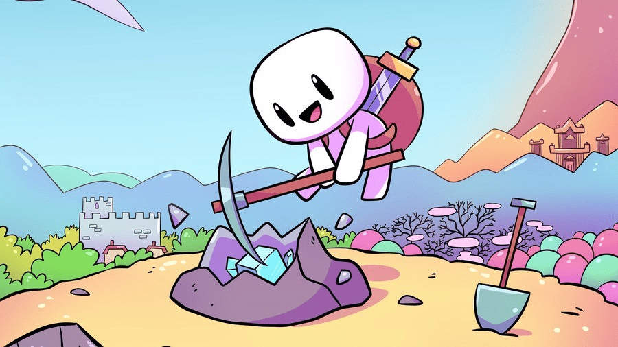

Forager es un juego de aventuras y exploración, en el que los jugadores asumen el papel de un solitario forrajero que se aventura en un mundo misterioso y lleno de peligros. El objetivo del juego es recolectar recursos, construir estructuras y expandir tu territorio, mientras luchas contra enemigos y descubres secretos ocultos en el mundo del juego.

Para empezar a jugar, los jugadores deben establecer una base y comenzar a recolectar recursos como madera, piedra y comida. A medida que se recolectan más recursos, se pueden construir estructuras y objetos nuevos, lo que permite al jugador mejorar su equipo y enfrentar a enemigos más difíciles.
A lo largo del juego, los jugadores deben explorar el mundo, buscar objetos valiosos y descubrir secretos. Además de enemigos, también hay misterios ocultos en cada rincón del mundo, lo que ofrece un desafío adicional y una motivación para seguir explorando.

Una de las características más interesantes de Forager es la habilidad de personalizar la experiencia de juego. Los jugadores pueden elegir diferentes habilidades y mejorarlas a medida que avanzan en el juego, lo que permite a los jugadores desarrollar su estilo de juego de acuerdo a sus preferencias personales.